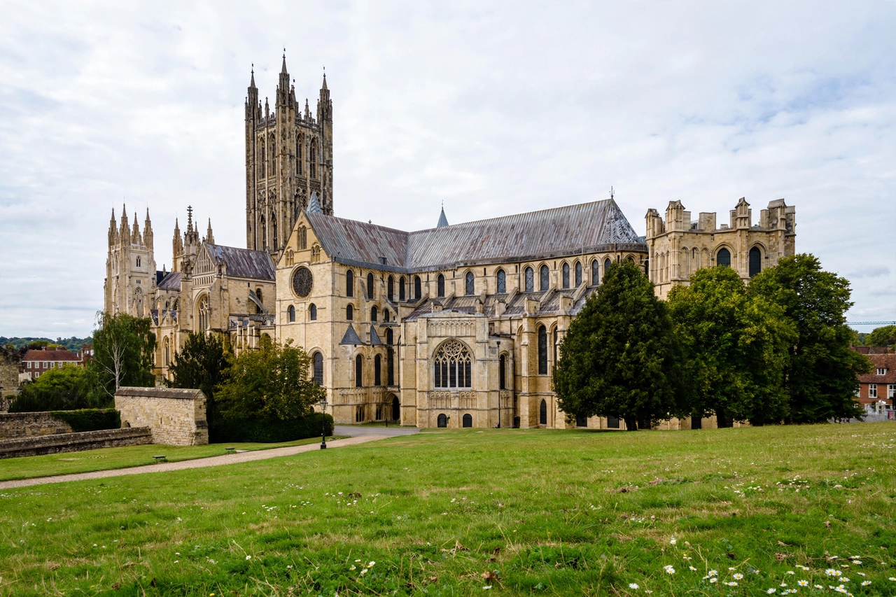

From Wikipedia, the free encyclopedia
| Church of England | |
 Canterbury Cathedral, the mother church of the worldwide Anglican Communion | |
| Type | Established church |
| Classification | Protestant (with Catholic elements) |
| Orientation | Anglican |
| Supreme Governor | Charles III |
| Primate | Archbishop of Canterbury |
| Headquarters | Church House, Westminster, London |
| Founded | 1534 (separation from Rome); origins traced to 597 AD |
| Dioceses | 42 in England, plus the Diocese in Europe and Sodor and Man |
| Churches | About 16,000 |
The Church of England (C of E) is the established Christian church in England and the mother church of the international Anglican Communion. It traces its history to the Christian church recorded as existing in the Roman province of Britain by the 3rd century and to the 6th-century Gregorian mission to Kent led by Augustine of Canterbury in 597 AD.
The church separated from the authority of the Pope and the Roman Catholic Church during the English Reformation, initially under Henry VIII in the 1530s. A process of reform influenced by theologians such as Thomas Cranmer continued under Edward VI before a brief restoration of papal authority under Mary I. The Elizabethan Religious Settlement of 1559 re-established the independent church and gave it a lasting identity that understands itself as both Catholic and Reformed.
Christianity reached Roman Britain early, and British bishops attended the Council of Arles in 314. The church in Anglo-Saxon England was reshaped by Augustine's mission from Rome (597) and by Celtic missions from Iona. In 1534, after the Pope refused to annul the marriage of Henry VIII to Catherine of Aragon, Parliament passed the Act of Supremacy, declaring the king "the only supreme head on earth of the Church of England." Monasteries were dissolved between 1536 and 1541.
Under Edward VI the church became more clearly Protestant: Thomas Cranmer's Book of Common Prayer appeared in 1549 and a revised edition in 1552. Mary I restored papal obedience and persecuted Protestants, but Elizabeth I's settlement (1559) restored royal supremacy (with the monarch styled Supreme Governor) and imposed the 1559 Prayer Book. The Thirty-nine Articles of 1563 defined the church's doctrine.
The church survived the Civil War — when episcopacy was abolished — and the Restoration of 1660, after which the 1662 Book of Common Prayer became the standard liturgy. The 19th century saw the Oxford Movement, which stressed the church's Catholic heritage. In the 20th century the church gained a measure of self-government: the Church Assembly (1919) was replaced by the General Synod in 1970. Women were first ordained as priests in 1994 and as bishops following legislation in 2014.
The monarch is Supreme Governor of the Church of England and appoints bishops and archbishops on the advice of the prime minister, from names proposed by the Crown Nominations Commission. The Archbishop of Canterbury is the senior bishop and spiritual leader, followed by the Archbishop of York. The church is divided into two provinces (Canterbury and York) and 44 dioceses, each led by a diocesan bishop. Legislative authority rests with the General Synod, comprising houses of bishops, clergy and laity; its Measures require approval by Parliament. Twenty-six senior bishops (the Lords Spiritual) sit in the House of Lords.
The Church of England's doctrine is set out in the Thirty-nine Articles, the Book of Common Prayer and the Ordinal. Scripture is held as the primary authority, interpreted through tradition and reason. Worship ranges from "low church" evangelical services to "high church" Anglo-Catholic ceremonial; the modern liturgy is contained in Common Worship (2000), while the 1662 Prayer Book remains authorised and is still used. The church administers two dominical sacraments — baptism and the Eucharist — and recognises five other sacramental rites.
The 2021 census recorded 46.2% of the population of England identifying as Christian, with the Church of England the largest denomination. The church maintains around 16,000 church buildings, many of them listed historic structures, runs or sponsors some 4,700 schools, and provides chaplains to hospitals, prisons, universities and the armed forces. Through the Anglican Communion, it is in fellowship with churches worldwide claiming some 85 million adherents.